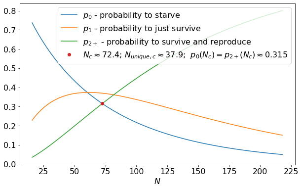
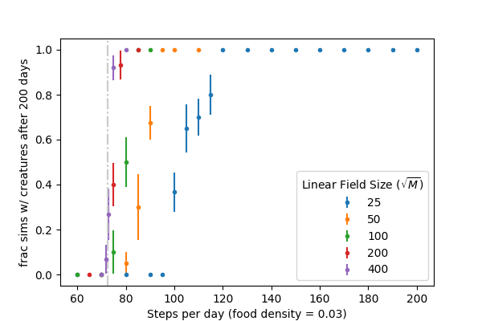
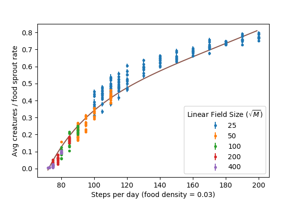

In this post, I explore some basic math behind the World Wandering Dudes framework previously introduced in this post.
To briefly reintroduce the system: imagine a field, a 2-D square lattice of \(M\) sites with food distributed randomly at a density \(\rho_{food}\). Creatures wander across the field taking \(N\) steps per day via random walk, gathering any food they come across. At the end of each day, if a creature has no food it dies, if a creature has exactly 1 food it survives, and if a creature has 2 or more food it survives and reproduces. The food will then resprout at random locations.
For the purposes of this post, to make the modeling simpler, we introduce the following properties:
-
All food spoils at the end of each day before resprouting - creatures cannot store it and it does not accumulate on the field.
-
All creatures teleport to a random field position at the end of each day, preventing creatures from consistently competing for food with their children.
-
Periodic boundary conditions on the field with \(M \gg N\) such that creatures do not wander “around the world” within a single day.
First, let’s imagine a single creature alone on the field. After taking \(N\) steps, the creature will explore \(N_{unique}\) unique sites on the lattice, where \(\langle N_{unique} \rangle \sim N^\beta\), with \(\beta \approx 0.87\) (see this post for more details). The number of food that this creature will gather by the end of the day is \(x \sim \text{Binom}(N_{unique}, \rho_{food})\). We’ll represent the probability the creature gets \(x\) food as
For very small \(N\), \(p_0\) is large and \(p_{2+} = 1 - p_0 - p_1\) is small - the creature is likely to perish without reproducing. The larger \(N\), the larger \(N_{unique}\), resulting in smaller \(p_0\) and larger \(p_{2+}\). There is a specific \(N\) for which \(p_0 = p_{2+}\) - at this critical point \(N_c\), the creature is equally likely to reproduce and to die. For \(\rho_{food} = 0.03\), the relevant probabilities along with this critical point are plotted below.

A couple of interesting notes:
-
At \(N_c\), the creature is most likely to get exactly 1 food and barely survive, it dies or reproduces with equal probability \(\approx 0.315 < 1/3\).
-
\(N_{unique, c} > 1/\rho_{food}\) - the creature must be, on average, gathering more than 1 food in order for it to not die off.
We can reproduce \(N_c\) from the simulation framework as well. We ran numerous simulations, holding \(\rho_{food} = 0.03\) constant and varying \(N\) for a few creatures (code here). For each \(N\), we plot the fraction of simulations that still had creatures after 200 days:

For sufficiently large fields, the transition from long-term survival to population collapse is sharp at \(N_c(\rho_{food} = 0.03) \approx 72\) as predicted by the binomial probabilities above, creatures that walk longer than this survive and multiply, creatures that walk shorter, die off. Smaller fields show propensity for population collapse at even higher \(N\) which can be attributed to inherent instability of relatively small populations (\(n < 10\) or so).
We can extend this understanding to a population of \(n\) creatures: Based on the rules outlined at the beginning of the post, the number of creatures on day \(i+1\), \(n_{i+1}\), will be:
where \(n_{i}(x=j)\) is the number of creatures getting \(j\) food in the previous day (creatures tomorrow = creatures today - deaths today + births today). In equilibrium, \(\langle n_{i+1} \rangle = \langle n_i \rangle\), implying \(\langle n_{i}(x=0) \rangle = \langle n_{i}(x>=2) \rangle\) (births=deaths). With well-separated creatures, we’ll find
Again, equilibrium is only achieved at \(p_0 = p_{2+}\) as discussed above.
However, if the creatures are thriving, they will multiply to the point that they are no longer in isolation and start to “steal” each other’s food. This will then curb the population’s growth. To explore this, for simulations with creatures that survived their first 200 days, we look at the average number of creatures on the field from day 100 to 200 (to isolate the equilibrium condition). We plot \(\langle n \rangle / \rho_{food} M\) (average creatures as a fraction of the daily food sprout rate):

The trend generally makes sense, creatures with longer walks gather more food and can maintain larger populations. Near the critical point \(N_c\), the stable populations are very low relative to the amount of food on the field, but they are stable (for sufficiently large fields). In this case, interactions between creatures are rare occurrences, but there are enough to keep the population from growing at the very slow rate that it would if all its creatures were in isolation (\(p_{2+}\) is only marginally larger here than \(p_0\)).
The remainder of this post is a discussion of the theoretical line in the figure above.
In order to approximate the impact of creature food “stealing” on the equilibrium population level, we must return to equations (\ref{birthdeath}) and add a term to account for these interactions to each. Some creatures that would have otherwise reproduced will lose this ability due to displaced food. Likewise, some creatures that would have barely survived will die. As an approximation, we’ll only model the impact on creatures that would have gotten exactly 1 (or 2) food as these creatures are the most at risk of losing the ability to survive (or reproduce) as a result of food displacement. The probability of the average creature having an interaction with one of the other creatures scales as \( n_{i} (\langle N_{unique} \rangle/M)\) (the number of other creatures times their relative footprint on the field), So, we can modify equations (\ref{birthdeath}), reducing births and supplementing deaths:
where \(A\) is some constant of proportionality having to do with some of the geometry of the system and the fraction of food displaced as a result of the average interaction.
Again, equilibrium will be reached when the two quantities in equations (\ref{birthdeathint}) are equal, which leads to a unique solution for the average number of creatures at equilibrium:
The line in the figure above is for \(A = 3/4\), which was a fit by eye. Not shown here, but we have confirmed that this prediction (with \(A = 3/4\)) works reasonbly well for other values of \(\rho_{food}\) as well.
This discussed model has some limitations:
-
It considers only creatures with exactly 1(2) food to be at risk of dying (failing to reproduce) as a result of interactions, while actually creatures that get 3+ food without interactions have a chance to have enough stolen to not reproduce or even to not even survive.
-
It fails to consider 3+ -body interactions (a creature with a trajectory overlapping with 2 or more other creatures).
-
It neglects the distribution of \(N_{unique}\), essentially mapping \(N_{unique} \rightarrow \langle N_{unique} \rangle\).
The model is thus not correct, but simple and captures the core of the problem. It reminds me vaguely of the Flory approximation in polymer physics (see discussion here).
 Dustin got a B.S in Engineering Physics from the Colorado School of Mines (Golden, CO) before moving to UC Santa Barbara for graduate school. There he became interested in Soft Condensed Matter Physics and Polymer Physics, studying the interaction between single DNA molecules and salt ions. After a brief postdoc at UC San Diego studying the physics of bacterial growth, Dustin decided to move into the data science business for good - he is now a Quantitative Analyst at Google in Mountain View.
Dustin got a B.S in Engineering Physics from the Colorado School of Mines (Golden, CO) before moving to UC Santa Barbara for graduate school. There he became interested in Soft Condensed Matter Physics and Polymer Physics, studying the interaction between single DNA molecules and salt ions. After a brief postdoc at UC San Diego studying the physics of bacterial growth, Dustin decided to move into the data science business for good - he is now a Quantitative Analyst at Google in Mountain View.